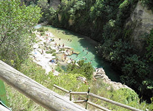

El Gorgo de la Escalera, próximo al campo de fútbol aparece como un gran cañón esculpido por las aguas del río, al cual se accede a través de 136 escalones. En sus frías aguas puede darse un baño o simplemente relajarse con la contemplación del paisaje y el sonido del agua que se precipita en forma de cascada en las profundidades del barranco, en otro tiempo aprovechada para la producción de electricidad.